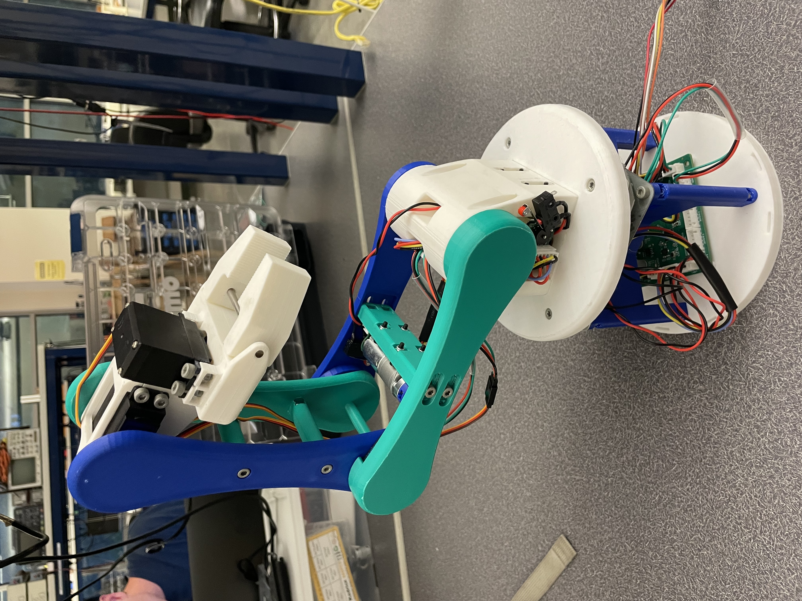
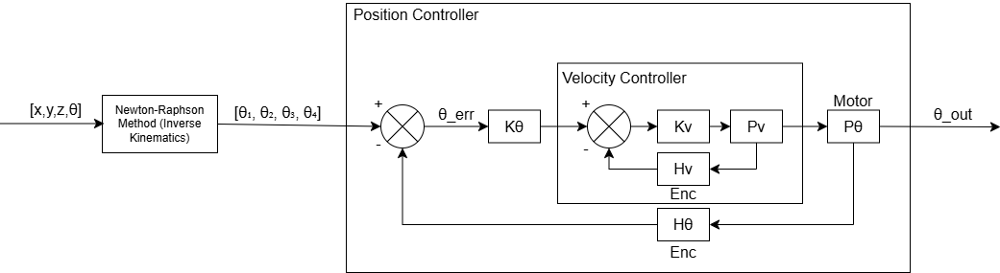
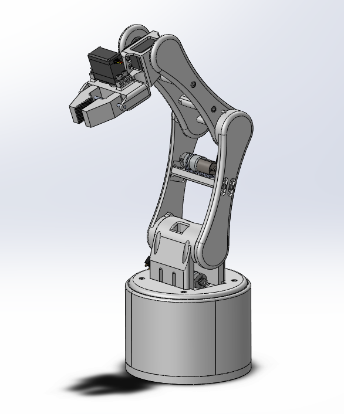
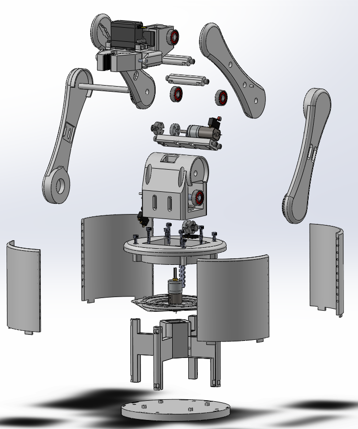
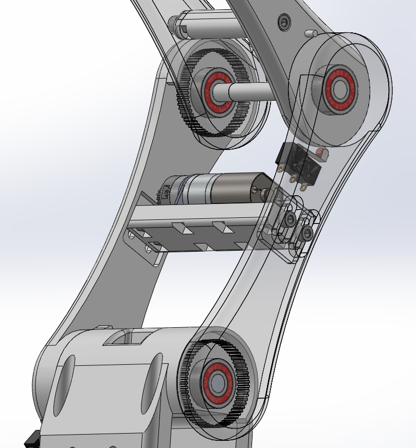
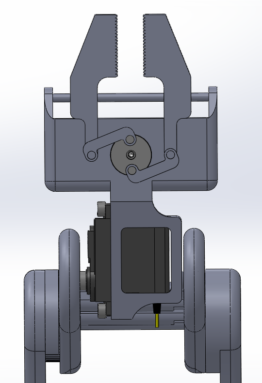
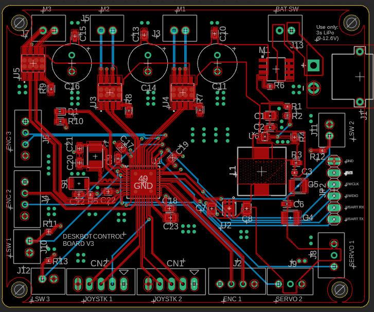

About the Deskbot
Deskbot is a 4-DOF robotic arm powered by an STM32F4 microcontroller on a specially designed PCB. The shoulder and elbow are driven by three DC motors, while the wrist and end effector are actuated by servo motors. The arm features:
- Cascading PID Control on the shoulder and elbow joint DC motors
- Encoder-based position feedback
- Servo control for wrist and end effector actuation
- UART integration for command and control
Demo Video
Firmware/Software Overview
DeskBot, in its current state, begins by entering a calibration state where it drives the joints slowly to their limits, indicated by a limit switch. This allows the system to then derive absolute position from the encoders. Following this process, the arm can then recieve position commands via UART in the format "(theta1, theta2, theta3, theta4, theta5)". Theta1-theta4 represent joint angles, while theta5 is the command for the end effector command. While our inverse kinematic model is functioning in MATLAB, it has yet to be translated to C and still needs some adjustments to avoid issues regarding singularities in the rotation matrices.
Firmware for the deskbot was written in C and is detailed in the data structures and files section of the documentation.
The firmware was structured in a pseudo-object-oriented style, where each "object", such as a motor or controller, has a corresponding structure and functions which operate on said struct.
Control Diagram

- Cascading position and velocity control architecture allows for precise, disturbance resistant motor control
- Integral windup protection via clamping, as well as output clamping to respect acutator limits
- Tolerable error margin to zero the integral near setpoint to increase stability and reduce oscillations
- Designed for integer math to increase performance on embedded systems
- Integrated via PID_Update() to support interrupt driven cooperative programming.
Mechanical Design
   
- Designed and 3D-printed custom linkages, base, end effector, and mounting hub, balancing sleek aesthetics with functional performance.
- Implemented a direct-drive base; shoulder and elbow joints utilize a 4:1 gear reduction via timing belts for increased torque and precision.
- Integrated servo-driven end effector for precise pitch control and coordinated actuation of gripper fingers.
- Developed adjustable slotted motor mounts to enable fine-tuning of belt tension for optimal performance.
- Embedded gear mesh features directly into the 3D-printed linkages to streamline assembly and reduce part count.
Board Design

- 4-Layer PCB hosting an STM43F411CEU6 for DeskBot Control
- Switching Regulator and LDO used for 6V and 3.3V respectively from a 3S LiPo Battery
- High current tolerating polygons used for motor supply.
- Featured:
- Three dual-channel H-bridge motor drivers
- Servo headers for wrist and gripper
- Quadrature encoder headers routed to TIM1-3
- limit switch inputs with pull-up resistors
- Optional joystick headers for further expansion in control
Challenges During Development
The biggest challenge we faced during development was an oversight in the board design. The servo PWM channels were accidentally routed to the same timer as one of the DC motor PWM channels. Since the servos and DC motor cannot operate even near the same frequency, we opted to develop software driven PWM to control the servos. We did so by triggering an internal timer at 4000 times the frequency required by the servo, and triggering the GPIO connected to the servo manually to generate the desired waveform. While this granted us the theoretical resolution of 1 degree of accuracy, the slightly inconsistent waveform led to some servo jitter.
Generated by